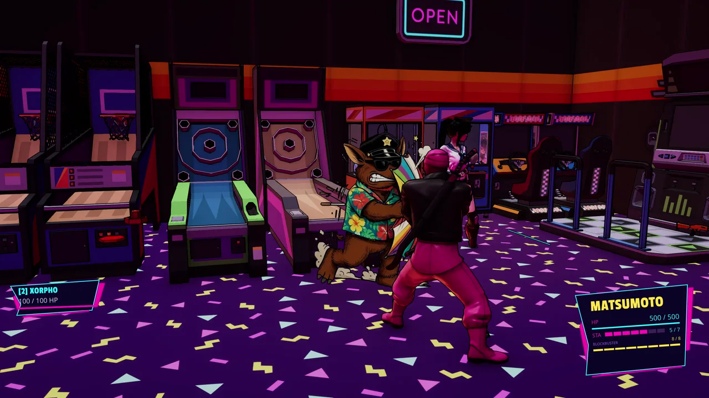
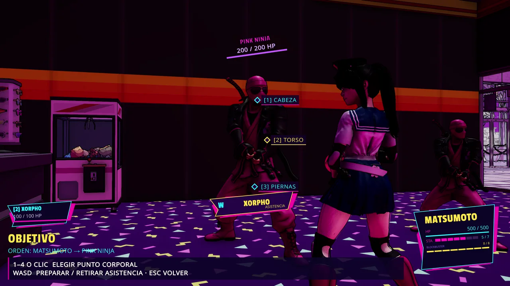
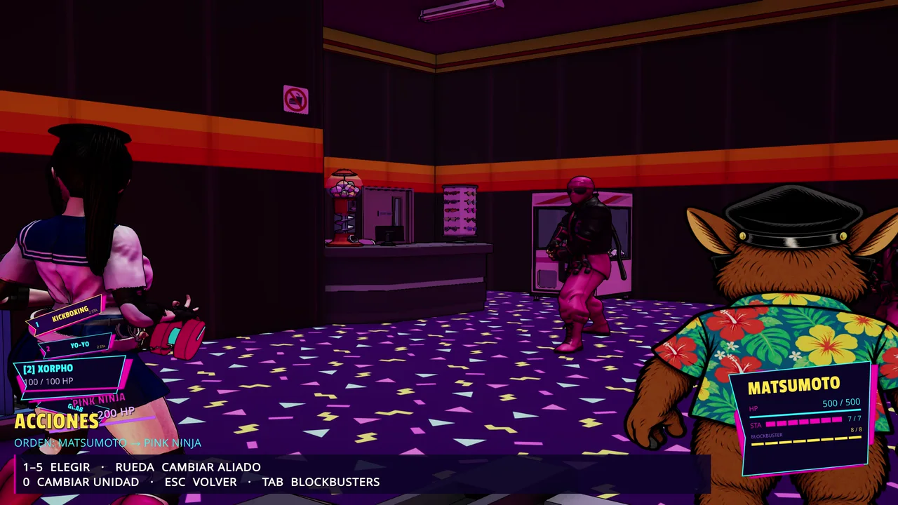

CH. 01S.A. TV / ACTION TRANSMISSION2026 BUILD / IN DEVELOPMENT
S.A. TV / NEW FREQUENCY / 01 — TACTICAL ACTION
TAEK-WON-COPTURBO.
THE CITY PICKS A FIGHT. YOU PICK THE RESPONSE.
Jake Turbo, Nikky Matsumoto and the Pink Ninjas collide in a neon arcade world. Move freely, take control of the confrontation and fight for the next turn. Your commands become physical attacks, defenses, interceptions and cinematic exchanges.
A character-driven arcade world, not an abstract combat screen.

REAL SCENE / ARCADE PLAYTESTTHE ARCADE IS AN ACTUAL PLACE.
NEOMIAMI / MIAMI-INSPIRED WORLD
FIGHTS DON'T EXISTIN A VACUUM.
There are places to move through, people to run into and opportunities that happen because somebody actually does something. The current build includes playable arcade encounters, party movement, enemies, pickups and interactive spaces—not just menu-based duels.
Behind the fights, the experimental Frenemy/Miami layer is taking shape: identities, factions, districts, businesses, firsthand knowledge and remembered events. Its wider city simulation is a development system, not a claim of a finished open world.
MOVEFree exploration between tactical encounters.INTERACTPick up weapons, change fighters and engage physical targets.REMEMBERFrenemy prototypes track verified events, experiences and who knows what.
THE CAST / PEOPLE, RIVALS & UNEXPECTED COMPANY
NOT JUST ANOTHER FIGHTER.
Different characters bring different silhouettes, equipment and ways to enter a confrontation.
01 / TURBO
LEAD / TAEKWONFLOW
JAKE TURBO
The game's central fighter. Kicks and tactical commands become choreographed clashes against real enemies in the scene.
02 / MATSUMOTO
ALLY / SKATES / YO-YO
NIKKY MATSUMOTO
A distinct playable combat style with skating movement and authored yo-yo techniques: throw, pull, recall and follow-ups.
03 / THE OPPOSITION

ENEMIES / COMBAT ROLES
PINK NINJAS
Enemies with their own combat loadouts. Their attacks create real opportunities to block, respond or intercept.
04 / WILD CARD

CAST / ARCADE PLAYTEST
XORPHO
A reminder that this cast goes well beyond conventional cops and ninjas. Seen in current arcade gameplay tests.
THE EXPERIENCE / AN ACTUAL ENCOUNTER
FROM FREE MOVEMENT TO THE HIT.
This is the gameplay loop: physical actions drive the action system, not a stack of prewritten event prompts.
01 / EXPLORE
MOVE & APPROACH
Explore the arena and approach actual enemies. Party members are selectable outside a locked confrontation.
02 / COMMIT
CHOOSE AN ACTION
Use your fighter's available cassette moves, weapon or contextual command. Stamina and action availability matter.
03 / AIM
PICK THE TARGET
Select a body zone. Head, torso, legs and rear coverage have distinct attack and defense values.
04 / RESPOND
GUARD OR INTERCEPT
React inside a limited window. A well-timed interception can stop an attack and transfer initiative.
05 / RESOLVE
LIVE WITH THE HIT
The result drives physical contact, effects and the next opportunity to keep the cadence or change sides.
PLAYABLE EXAMPLE /The mall tutorial in the project chains movement, a fight, defense, a weapon pickup and firing on a destructible exit. Scenes and interactions are still being refined.
THE HEART OF THE GAME / ACTION — REACTION — INTERCEPTION
NOT BUTTON MASHING. A FIGHT FOR INITIATIVE.
A combat result is decided by rules first, then performed by the characters.
ARI / ACCIÓN · REACCIÓN · INTERCEPCIÓN
ARI.
Attack, respond, interrupt and seize the next opening. The fight flows through deliberate exchanges. A defended attack can cost the aggressor initiative; an interception can shut down an active threat. Allies can join an exchange without taking ownership of the action.
AACTION
RREACTION
IINTERCEPTION
01 / THE ROLL
ATTACK vs DEFENSE
A D20-based confrontation combines the action's zone attack values, the defender's body defenses and the chosen response. Margins influence the quality of the hit, damage and effects.
02 / ECONOMY
STAMINA & CADENCE
Actions cost stamina, and rounds replenish it. Continuing a close-range attack spends resources; Block/Overwatch closes proactive action but keeps possible defensive responses.
03 / PERSONAL STYLE
CASSETTES ARE REPERTOIRES
A cassette can define actions, support, reactions, interceptions, animation sets and even attached gear. TKD, gunslinger, ninja swordplay and Matsumoto's yo-yo are different fighting toolsets.
04 / EXECUTION
REAL BODIES, REAL CONTACT
The choreography system coordinates attack routes, positioning, strikes, reactions and recovery. The camera stages the exchange instead of acting as the combat rulebook.
OUTSIDE THE MAIN EXCHANGE / IN DEVELOPMENT
A BIGGER ARCADE WORLD.
The combat isn't the whole project. These connected systems exist in the project, with different levels of integration.
FRENEMY / DEVELOPMENT SYSTEM
A WORLD THAT KEEPS RECEIPTS.
Frenemy tracks confirmed gameplay events, identities, relationships and experiences. Witnesses only learn about what they can actually observe. An experimental Miami simulation manages off-screen residents, districts, money, business activity, crime and investigation. NPC interest in a challenge can depend on their own knowledge and history. This is a developing simulation layer, not a finished city campaign.
PLAYABLE SYSTEM / IN DEVELOPMENT
TURBOCARDS / ARCADE88
A collectible side game: 4×4 board, eight possible directions, card-by-card active arrows, corner values, captures and combos. A cheerleader encounter is being integrated through Adventure Creator.
SPECIAL ATTACKS / IN DEVELOPMENT
BLOCKBUSTERS
Cinematic specials powered by an eight-level charge grid. Slots, costs, charges, effects and authored sequences turn a hard-earned opening into a big moment.
ENVIRONMENT / PROTOTYPES
VEHICLES, PICKUPS & PROPS
Vehicle encounters, equippable guns, ammunition, melee durability and destructible objects are represented in the code and prototype scenes. They are not advertised as finished levels.
REAL PLAYTEST VIDEO / CAPTURED 30 OCTOBER 2026
SEE THE ACTUAL GAME.
Current-build captures. You can see the fighters, scene movement, targeting and combat UI—not a fabricated trailer.
NIKKY vs PINK NINJASMOVEMENT / CONTACT / CURRENT BUILD
THE CAST IN THE ARCADEHEAD / TORSO / LEGSSCENE / OBJECT / WEAPONDEFENSE / CHOICE
BUILD STATUS /Footage is from a working Unity project. Gameplay, camera behavior, animation, content and performance remain under development; no public demo or release date is announced here.
SHAMPOO ARCADE / PRODUCTION IN MOTION
THE NEXT ROUND ISN'T FINISHED.
Taek-Won-Cop Turbo is an actively developed PC game. The page distinguishes mechanics demonstrated in the current build from emerging systems like Frenemy and the wider Miami simulation.
 JAKE TURBO / ARI
JAKE TURBO / ARI